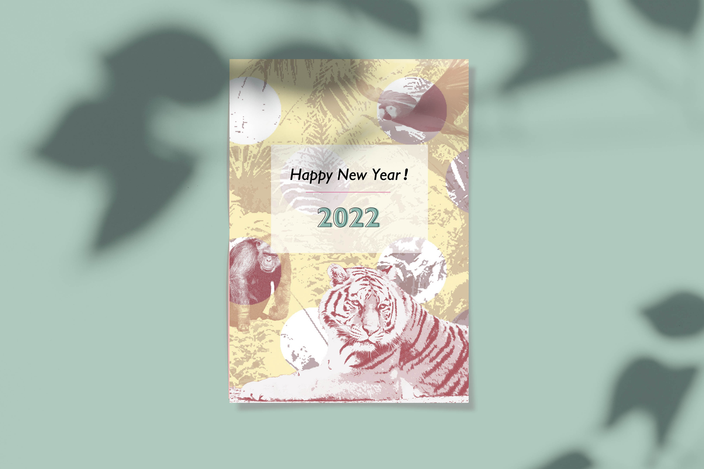

<!DOCTYPE html>
<html lang="ja">
<head>
    <meta charset="UTF-8">
    <meta http-equiv="X-UA-Compatible" content="IE=edge">
    <meta name="viewport" content="width=device-width, initial-scale=1.0">
    <title>Chihiro's Portfolio</title>
    <link rel="shortcut icon" href="img/C-icon.svg"　type="image/svg+xml">
    <link rel="preconnect" href="https://fonts.googleapis.com">
    <link rel="preconnect" href="https://fonts.gstatic.com" crossorigin>
    <link href="https://fonts.googleapis.com/css2?family=Inconsolata:wght@500&family=Noto+Sans+JP:wght@100&family=Poppins:wght@100;200&family=Shippori+Mincho&display=swap" rel="stylesheet">
    <link rel="stylesheet" href="portfolio.css">
</head>
<body id="postcard" class="portfolio-body portfolio-graphicdesign-body">
    <header>
        <div class="nav-wrapper">
            <nav class="header-nav">
                <ul class="nav-list">
                    <li class="nav-item"><a href="index.html#index">Top</a></li>
                    <li class="nav-item"><a href="index.html#profile">Profile</a></li>
                    <li class="nav-item"><a href="index.html#skill">Skill</a></li>
                    <li class="nav-item"><a href="index.html#work">Work</a></li>
                </ul>
            </nav>
        </div>
        <!--ハンバーガーメニュー-->
        <div class="bar_nav-wrapper">
            <nav class="bar_header-nav">
                <ul class="bar_nav-list">
                    <li class="bar_nav-item"><a href="index.html">Home</a></li>
                    <li class="bar_nav-item"><a href="index.html#profile">Profile</a></li>
                    <li class="bar_nav-item"><a href="index.html#skill">Skill</a></li>
                    <li class="bar_nav-item">
                        <a class="bar_nav-item-work-parent" href="index.html#work">Work</a>
                        <dl>
                            <dt><a class="bar_nav-item-work-child" href="index.html#webdesign">- Web Design -</a></dt>
                                <dd ><a class="bar_nav-item-work-child-child" href="portfolio-webdojo.html">Web school site</a></dd>
                                <dd ><a class="bar_nav-item-work-child-child" href="portfolio-portfoliosite.html">portfolio site</a></dd>
                                <dd ><a class="bar_nav-item-work-child-child" href="tatamistore.html">Tatami store site</a></dd>
                        
                        <dt><a class="bar_nav-item-work-child" href="index.html#graphicdesign">- Graphic Design -</a></dt>
                        <dd><a class="bar_nav-item-work-child-child" href="portfolio-businesscard.html">Businesscard</a></dd>
                        <dd><a class="bar_nav-item-work-child-child" href="portfolio-postcard.html">Postcard</a></dd>
                        <dd><a class="bar_nav-item-work-child-child" href="portfolio-package.html">Package</a></dd>
                        <dd><a class="bar_nav-item-work-child-child" href="portfolio-flyer.html">Flyer</a></dd>
                    </dl>
                    </li>
                
        </div>
            <!--  /ナビ表示時 ナビの外をクリックしたら閉じるようにする用 -->
            <span class="nav_bg"></span>
        <div class="burger-wrapper">
            <div class="burger-btn">
                <span class="bars">
                    <span class="bar bar-top"></span>
                    <span class="bar bar-mid"></span>
                    <span class="bar bar-bottom"></span>
                </span>
            </div>
        </div>
        </header>
                        <!------------------------------- main ---------------------------------->
    <main>
        <h2 class="category">Graphic design</h2>
        <h3>2022年年賀状</h3>
        <div class="main-image">
            
            <p style="font-size:10px; padding-right:15%;">モックアップ写真：<a href="http://www.freepik.com">Designed by rawpixel.com / Freepik</a></p>
        </div>
        <div class="portfolio-content-wrapper">
            <p class="intro-sentence alignCenter">
                2022年年賀状をデザインしました。
            </p>
                <div class="portfolio-content">
                    <h4>ターゲット</h4>
                        <p>
                            定番のデザインとは異なる個性的な年賀状を送りたいと思っている30代の会社勤めの女性
                        </p>
                        <!--
                    <h4>目的</h4>
                        <p>当スクールの強み（授業や講師の質の良さ）を知ってもらい、新規顧客獲得に繋げる</p>
                        -->

                    <h4>制作ポイント</h4>
                        <h5>野生動物の写真</h5>
                            <p>働く女性が、１年の始まりとして力強くスタートを切りたいといった気持ちを表現できるような、ジャングルと野生動物の写真を用いるといった、力強く、また、珍しいデザインにしました。
                            　</p>
                        <h5>テイスト・色について</h5>
                        <p>キュートさを感じさせる黄色と赤を使用し、野生動物のワイルドさと相反するテイストと掛け合わせることで、ターゲット層の嗜好性に合うようにセンスが高く見えるようにデザインしました。　アクセントカラーとして黄色や赤と対称的な色相の緑みの青を使用しました。</p>
                        
                    <h4>制作期間</h4>
                            <p>2日間 (2021年1月)</p>
                    <h4>作業範囲</h4>
                            <p>企画・デザイン作成</p>
                    <h4>使用ソフト</h4>
                            <p> PhotoshopCC2018(画像編集),　illustratorCC2018(文字入力) </p>
                            
        
                </div>
         <!--上に戻るボタン-->
         <p class="link-top-btn"></p>
    </main>
    
    <footer>
        <div class="footer-contact">
            <p>Murata Chihiro</p>
            <p class="footer-email">chiiro052@icloud.com</p>
        </div>
        <p class="copyright"><small>&copy;Murata Chihiro</small></p>
    </footer>
    <script type="text/javascript" src="http://ajax.googleapis.com/ajax/libs/jquery/1.9.1/jquery.min.js"></script>
    <script type="text/javascript" src="script.js"></script></footer>
</body>
</html>